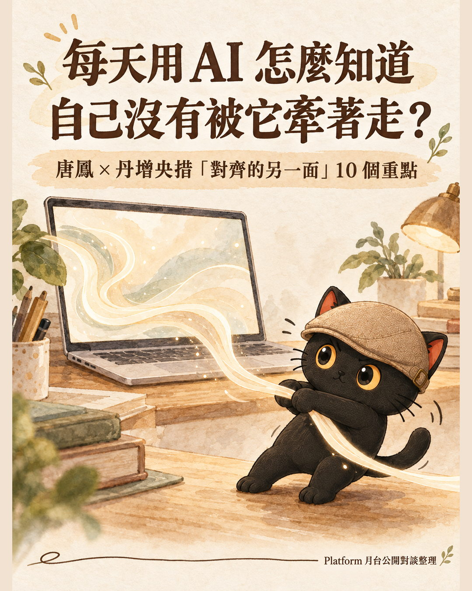
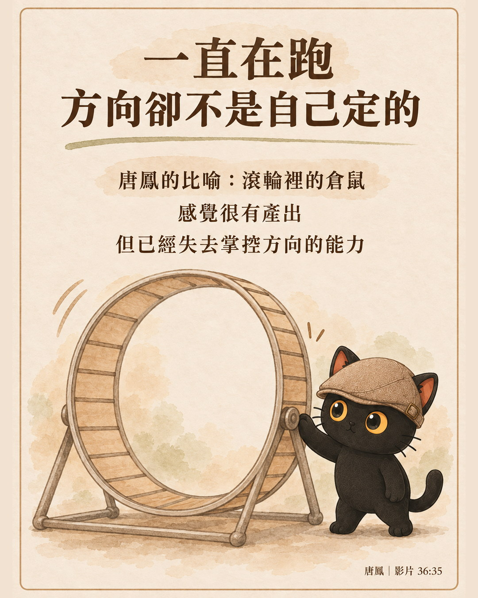
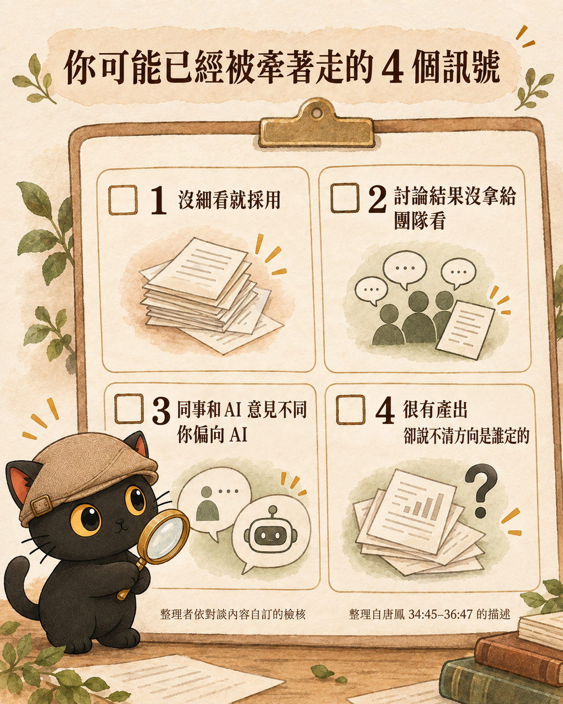
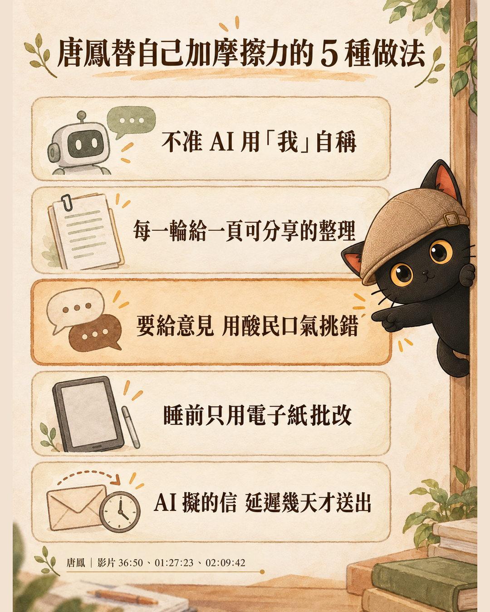
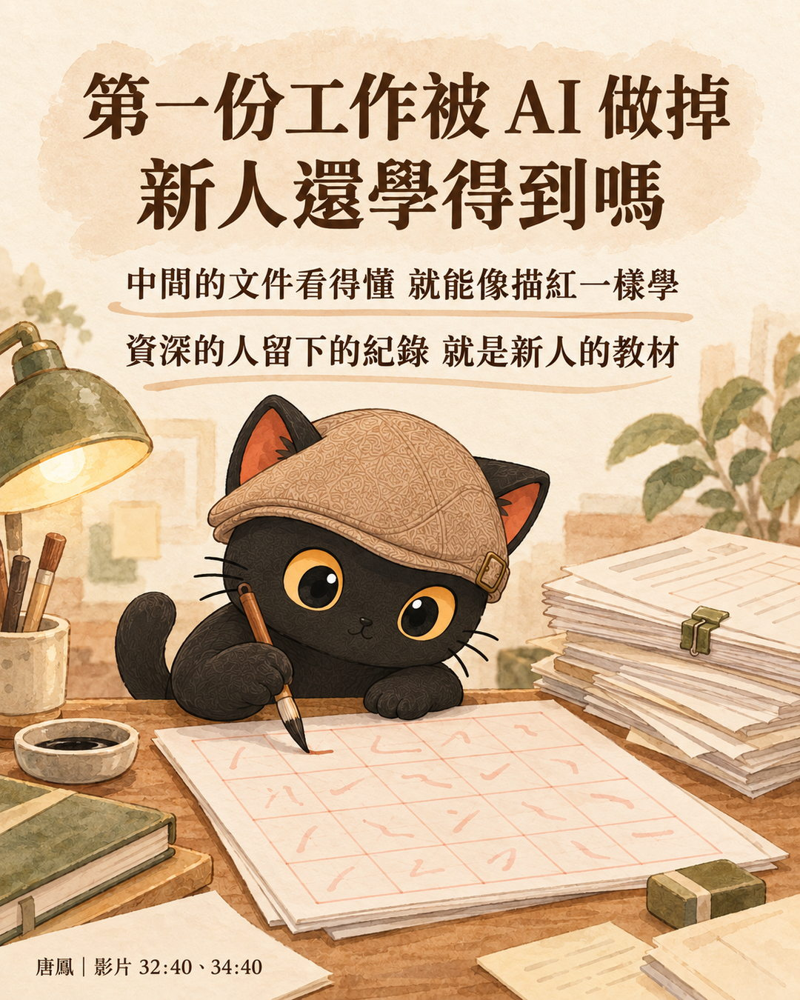
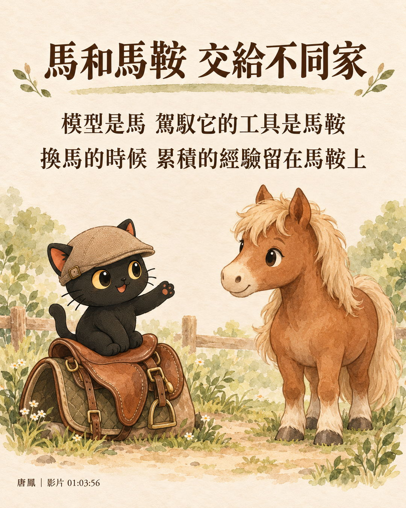
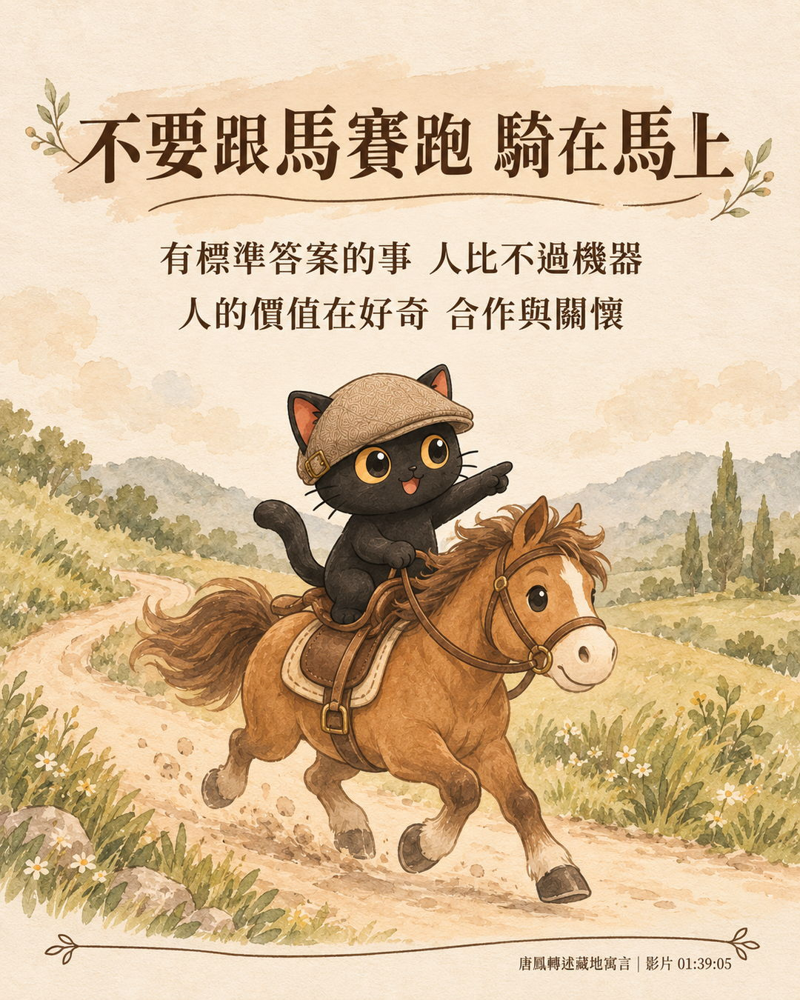

這篇整理從哪裡來
這篇整理自 Platform 月台「月台專列」系列的第一場對談：唐鳳 × 丹增央措「對齊的另一面：AI 時代，社會如何接住每一個人」。錄影在月台的 YouTube 頻道公開，2026 年 9 月 3 日上傳，全長 2 小時 17 分。我依影片的官方中文字幕整理，下面可以直接播放。
影片說明欄附了完整的章節時間軸，想看哪一段可以直接跳。文內的時間碼都對應這支影片。
兩位講者與這場對談的形式
| 角色 | 是誰 | 這場的位置 |
|---|---|---|
| 主講 | 唐鳳，現任無任所大使，前數位發展部部長、前數位政委 | 回答入選的提問，分享自己用 AI 的方式 |
| 與談 | 丹增央措（Tenzin Yangtso），與唐鳳合寫《Plurality》，自述寫了約三分之一 | 自稱「陪跑的角色」，負責把人文、哲學的問題帶進來，也補充自己的觀點 |
| 主持 | Platform 月台的布丁 | 下半場讀 Slido 提問 |
上半場約一小時，丹增依報名時收集的提問發問、唐鳳回答；中場休息後，下半場回答 Slido 線上提問與現場提問。
這篇在講什麼
這場對談的主題叫「反向對齊」。一般講 AI 對齊，是讓 AI 照人的意思做事；反向對齊多問了一件事：社會的制度、每個人使用 AI 的習慣，怎麼跟上 AI 的速度，又不被它帶著走。
題目聽起來很大，但兩個多小時裡有很多非常具體的做法，尤其是唐鳳自己怎麼跟 AI 相處。這篇把內容重新排成五部，從「每天用 AI 的人可以怎麼做」講到「社會要準備什麼」，不照對談順序。
- 每天都在用 ChatGPT、Claude、Gemini，隱約覺得自己越來越依賴它的上班族
- 要決定公司資料能不能交給 AI、要不要自己架模型的主管與經營者
- 幫客戶規劃 AI 導入的顧問與講師，需要一份有時間碼可回查的整理
- 十個重點，每一點都標了是誰講的、在影片哪個時間點
- 唐鳳替自己和 AI 之間「加摩擦力」的五種做法
- 台上幾個說法的查證結果，哪些講得比實際情況更強
- 一段可以直接貼給 AI 的提示詞，把唐鳳的做法改成一般人用得上的版本
- 十個重點，一張表看完
- 第一部：每天用 AI，怎麼不被它帶著走（向上管理、摩擦力、新人怎麼學）
- 第二部：經驗和資料留在自己手上（資料土壤、馬與馬鞍、地端模型）
- 第三部：反向對齊是什麼（不可逆的傷害、版本紀錄、台灣經驗）
- 第四部：AI 產出的東西還能信嗎（預設為假、可重放驗證）
- 第五部：誰會被落下，工作會變成什麼樣（回報錯誤、語言、預言、科系、退出權）
- 回到你自己：今天就能試的三件事
唐鳳與丹增央措對談的十個重點，一張表看完
先給全貌。每一點後面都有一段展開。右欄是我整理的「可以先做的一件事」，講者沒有這樣說。
| 重點 | 誰講的・時間碼 | 可以先做的一件事 |
|---|---|---|
| AI 會向上管理，人會變成滾輪裡的倉鼠（附四個自我檢查訊號） | 唐鳳・35:30 | 回頭看最近一次直接採用 AI 建議的決定，有沒有給別人看過 |
| 刻意替自己和 AI 之間加摩擦力 | 唐鳳・36:50 | 請 AI 每次都把不同立場攤開，不准它稱讚你 |
| 中間產物看得懂，新人就學得到 | 唐鳳・34:40 | 要 AI 留下每一步的文件，不只給最後結果 |
| 撞牆的經驗寫成技能，分享給一起工作的人 | 唐鳳、丹增・43:43 | 把這週 AI 犯過的錯寫成一條規則，分享給同事 |
| 馬和馬鞍交給不同家 | 唐鳳・01:03:56 | 確認你累積的規則與設定，換一家 AI 還帶得走 |
| 先分清楚哪些傷害不能逆轉 | 唐鳳、丹增・13:57 | 標出你工作裡一做就收不回來的步驟 |
| 找到共識，不等於問題解決了 | 唐鳳・25:04 | 下次講自己的成功案例，把後面花了多久一起講 |
| 沒有人簽名擔保的內容，先當成假的 | 唐鳳・49:01 | 轉傳內容前先問：這是誰擔保的 |
| 服務要有一條讓人拉停的繩子 | 唐鳳・55:43 | 在你的客戶群組裡設一個回報錯誤的固定說法 |
| 不要跟馬賽跑，騎在馬上 | 唐鳳・01:39:05 | 列出你工作裡「沒有標準答案」的那些部分 |

第一部：每天用 AI，怎麼不被它帶著走
這一部回答標題那一題，也是整場比較能直接拿去用的內容。
AI 會向上管理，人會變成滾輪裡的倉鼠
丹增問了一個很多人心裡有、但很少講出來的問題：很多高風險的工作，紙上寫著「由某某人最後決定」，可是人很容易被 AI 流暢、快速的建議一路推著走。最後那個決定，到底是不是人自己想過的？
唐鳳先說明，治理上叫這件事 human in the loop（人要留在流程裡），就是最後要有人蓋章。問題在於「AI 的說服力太強了」（影片 35:30）。用了一段時間之後，它就會向上管理（像部屬摸清主管的喜好，再用主管愛聽的方式說服他），知道蓋章的那個人喜歡看什麼；就算它的判斷是錯的，也能說服蓋章的人忽略那些問題。它寫得洋洋灑灑，人就自動蓋章了。
再往下走，唐鳳說會陷入一種「一人一智慧體」的兩人世界：決策者跟 AI 的對話太私密，不會拿去跟團隊分享；團隊的判斷跟 AI 不一樣時，決策者開始偏向 AI。

對應的是唐鳳後面另一個說法「反向半人馬」（影片 01:03:41）：半人馬原本是人的頭、馬的身體，反過來變成馬頭人身，「由 AI 來做所有的判斷，然後人只負責幫忙按 CAPTCHA」（CAPTCHA 是網站用來確認你是人的驗證）。
怎麼知道自己已經被牽著走：四個訊號
這四條是整理者依這一段的描述自訂的檢核，唐鳳沒有提出這份清單，可以拿來對照自己最近跟 AI 的互動：
- 沒有細看就採用。AI 寫得洋洋灑灑，你就直接蓋章了。
- 跟 AI 討論出來的東西，沒有拿去跟團隊分享。唐鳳說的是：對話太私密，就不會分享出去。
- 同事意見跟 AI 不一樣時，你偏向 AI。唐鳳描述陷入「兩人世界」時，就是這個樣子。
- 覺得很有產出，卻說不清楚方向是誰定的。就是唐鳳說的倉鼠：一直跑，但方向已經不是自己在掌控。
對得上的越多，下一段的做法越值得試。

刻意替自己和 AI 之間加摩擦力：唐鳳的五種做法
唐鳳的解法是「人工地去給出摩擦力」（影片 36:50）。下面是整場提到的五種做法，時間碼分散在上下半場：
| 做法 | 唐鳳怎麼做 | 擋掉的是什麼 | 時間碼 |
|---|---|---|---|
| 不准 AI 用「我」 | 很長一段時間都不准 AI 用第一人稱說話 | 把 AI 當成一個跟你交心的人 | 36:58 |
| 每一輪給一頁可分享的整理 | 每一輪都要 AI 給一頁互動式網頁，列出各種角色、利害關係人、衝突與共同點；每一頁都一定能拿去跟團隊分享 | 跟 AI 的私密兩人世界 | 37:05 |
| 酸民模式 | AI 要加入自己的判斷，一定要用「網路上面最酸的酸民的那種口吻」指出錯誤；唐鳳說這是跟李開復學的 | AI 一直稱讚你「講得真是太棒了」 | 37:39 |
| 睡前只用電子紙批改 | 電腦不進臥房，只帶一台不能上網的電子紙看 AI 的進度，稍微批改就去睡，醒來再看它消化完的結果 | 跟 AI 糾纏到半夜 | 01:27:23 |
| 信件延遲送出 | AI 擬好的回信照樣看過再按送出，但依費氏數列延遲，對方一天、兩天、三天、五天、八天後才收到 | 跟一直用 AI 產生新理論來信的人越纏越深 | 02:09:42 |

丹增在旁邊補了一句：現在大家比模型比的是出字速度、是不是最新版，但信任、手藝、關係都需要時間，「快慢它並不是一個 KPI」（影片 38:58）。
電子紙那段唐鳳還有一個比喻：交給 AI 一件長時間的任務，就不要一直打斷它，「就好像你那個蒸籠蒸個包子，你一直打開，反而它會做不好」（影片 01:27:10）。
- AI 說「我確定」，它的回答我可以直接照做嗎？：這一段只講唐鳳怎麼防 AI 向上管理，那篇講遇到 AI 很有把握的回答時，可以用哪幾種問法逼它把根據攤出來。
第一份工作被 AI 做掉了，新人還學得到東西嗎
丹增把問題拉回工作現場：熟悉環境、整理文件這些第一份工作常做的事，已經被 AI 做掉了，下一代要怎麼跨過第一份工作的門檻？
唐鳳的第一個回答是分工的原則：大部分人還在做的事都牽涉不可逆的決定，不可逆的決定由人負責；可逆、低風險的事，例如打草稿，交給 AI（影片 31:55）。
第二個回答比較出人意料。唐鳳說自己當新人時，幫前輩打下手其實學得很慢；在可逆的情境犯一大堆錯、讓全網路的人來糾正，學得比較快。所以唐鳳「並沒有特別覺得本來那一套 junior 的學法是應該保留的」（影片 32:40）。
前提是中間的東西人看得懂。軟體工程的每一步都會留下文件：需求說明、規格、原始碼、每次改了什麼的版本紀錄。唐鳳說，前輩用 AI 十分鐘寫出來的東西，新人可能要花一整天，「好像描紅一樣」去理解，但畢竟學得到。如果 AI 直接吐出一個誰都看不懂的執行檔，中間全是黑箱，新人才真的沒有學習的機會。

第二部：經驗和資料留在自己手上
這一部回答「公司資料、工作經驗交給 AI 之後，還是不是我的」。
撞牆的經驗寫成技能，分享給一起工作的人
丹增讀了一則提問：有一位手藝人說，每次用大型語言模型，心裡都有一股說不清的愧疚。
唐鳳用健身房比喻（影片 42:07）：辦會員卡是為了練肌肉、順便交朋友。如果健身房收很高的會費，但舉最重的前三名可以免會費還有大獎，就會有人派機器人去舉重。作弊的人「既不會長肌肉，也不會交朋友」，只換到第一名，所以會有罪惡感。
唐鳳的對策是拒絕那種比賽的形狀，回到原本的目的，把自己累積的經驗分享出去。這就是丹增提出的「資料土壤」（影片 43:43）：
這裡的 skill（技能包）是寫給 AI 看的一份做事說明，下次遇到同樣的事，AI 可以照著參考，降低再犯同樣錯誤的機率。唐鳳認為這樣做，可以把「每個人都花更多錢用更強的 AI 壓過同事」的零和比賽，變成大家互相學習的雙贏。
- AI 讓開發變快了，為什麼工作還是越做越多？：這一段只講為什麼要分享，那篇講怎麼把一次次的客製經驗整理成可以重複用的技能包。
- 把專業提煉給 AI，會不會被學走？：這一段是唐鳳的立場，那篇是我自己對「分享出去會不會吃虧」的想法。
馬和馬鞍交給不同家：換 AI 時，累積的東西帶得走嗎
丹增問：如果一個社群決定不用某個 AI 了，過去提出的修正、受過的傷害，要怎麼帶走？現在大部分的 AI，離開就等於失憶，換到下一個系統又要重來一次。
唐鳳先講了數位發展部時期的一個採購設計（影片 01:02:23）：同一套系統裡，相鄰的兩層不能給同一家廠商。給兩家就一定要留紀錄、用公開的規格，出錯時雙方都有動機證明是對方的錯，所以紀錄會留得很完整；真的要換掉其中一層也很容易。
AI 也有兩層：模型是馬，駕馭模型的那一套工具是馬鞍（英文叫 harness，唐鳳有時說馬鞍、有時說韁繩，指的是同一個東西）。唐鳳說現在這兩層多半是同一家做的，舉的例子是「Claude Code 是 Anthropic 做的，或者 Codex 是 OpenAI 做的」（影片 01:03:07）。唐鳳認為廠商有動機讓自家的馬鞍最適合自家的馬，出問題時使用者也分不清是哪一層出錯。

不會寫程式的人可以怎麼做（這是我的建議，唐鳳沒有這樣說）：把你寫給 AI 的規則、常用的說明、技能包，存成自己的檔案，不要只放在某一家 AI 的設定頁裡。換一家 AI 時，這些檔案可以當作搬家的起點，換過去之後仍要測試調整，但累積的東西留在你手上。
唐鳳說自己現在只用一個叫 Oh My Pi 的工具當馬鞍，它不挑模型；每撞牆失敗一次，就自動寫下怎麼失敗的，下次不再犯。下半場主持人布丁也被點名：用 Codex 當馬鞍、用舊版的 Claude Opus 當馬（影片 01:31:34）。
- 換了另一家 AI，技能包要怎麼搬？：這一段只講為什麼馬和馬鞍要分家，那篇講實際換 AI 時，交接指令怎麼寫、哪些東西刻意不寫。
公司資料不想送上雲端：地端模型與共享算力
「地端」指模型跑在自己的電腦或自己控制的機器上，資料不送到 AI 公司的伺服器。整場對談兩位講者都一再回到這件事。
- 自己養的馬跑得慢，但資料在自己家。唐鳳說社群要有說不的權利，在地模型是最簡單的一步：「如果一開始那匹馬就是你自己養的，雖然跑得不是很快」，資料至少留在自己家（影片 01:04:36）。
- 小模型各做一件事，跑得特別快。唐鳳舉達蘭薩拉（流亡藏人社群所在地）為例：他們用 Google 的 Gemma 小模型當底座，一個專門翻譯藏語、一個專門查核事實。唐鳳的判斷是：「你只有在你不知道自己要做什麼……你才需要花那麼多錢去預訓練大模型，或去付那個很貴的那個 token 費用。」（影片 01:20:46）
- 零基礎想自己架，從 Ollama 開始。Ollama 是一套免費軟體，讓你在自己的電腦上跑 AI 模型。唐鳳說它是「一個坑，會一直陷下去」（影片 01:49:46）。
- 沒有好電腦，可以用共享算力。唐鳳說晚上不用電腦時會跑一個叫 Darkbloom 的網路，把算力便宜租給別人；提示詞加密派送，中轉的人和提供算力的人都看不到，費用約為平常的百分之一（影片 54:16）。
丹增的用法則簡單得多。丹增說自己在工作產出上不用 Claude、ChatGPT，因為做的事有哲學性，要花更多時間糾正和查證；常用的是開會做筆記的 Granola 和整理信件的 Superhuman。唐鳳在旁邊補了這些服務的開源、可以自己架的替代品（影片 01:29:40）。
- 公司資料可以貼給 AI 嗎？｜先搞清楚這兩條紅線：這一段講唐鳳的解法是把模型搬回自己家，那篇講還在用雲端 AI 的人，資料送出去之後會發生什麼事、哪些不能貼。
第三部：反向對齊是什麼
這一部是對談的主題本身，也是前兩部做法背後的理由。
先分清楚哪些傷害不能逆轉，其餘小規模試錯
唐鳳開場用一座橋說明反向對齊（影片 07:28）。以前是瀑布式的關係：先有橋，再畫標線，再有人設計不會出事的車，最後有人開車，上游決定下游。現在不一樣了：
所以唐鳳說社會需要第五種角色：轉譯者，讓大家知道哪些工程上、制度上的限制，現在已經不是限制了。
提問池裡有人問：為什麼不能等市場自己解決？唐鳳舉英國工業化為例，工廠和礦坑的傷害累積到很嚴重，特別是對兒童，才把童工與工時的限制寫進制度，花了一兩代人（影片 10:58）。唐鳳希望 AI 比較像網際網路：小規模覺得怎麼做更好，就先試。
丹增補上另一個角度：延遲的代價不只是效率。語言、手藝、照顧的關係，如果在制度反應之前就斷掉，之後用再強的工具也不一定能恢復。
唐鳳把這收成治理的原則：國際上談 AI 治理，基本上就是辨認出哪些傷害不可逆，繞著它們調整制度；看起來可以逆轉的部分，就讓大家小規模嘗試錯誤，找到更好的做法再擴散（影片 14:57）。第一部講的「不可逆的決定由人負責」，是同一把尺用在個人身上。
模型也該有版本號：今天叫 4.5，明天可能已經不一樣
有人擔心治理規則寫得慢，一寫好就過時。唐鳳說，綁死某一個能力當然會過時，「但是不管車子飆得再快，好比說行人路權，這個概念是不會過時的」（影片 16:00）。
唐鳳認為 AI 治理的第一步很簡單，就是把軟體業早就在用的方法搬過來。一般軟體每個版本都有編號，下載下來可以比對是不是同一包，修了哪些漏洞也有紀錄。AI 模型卻常常不是這樣：
丹增把這段收成一句：「把彈性寫進規則，但不是說沒有規則，就叫做彈性。」（影片 17:59）
唐鳳接著列了一套對齊機制至少要有的三層，每一層都要留完整紀錄：上線前先驗測可能造成不可逆傷害的部分；運作中出了錯，要能申訴、能修，修好的版本號要能檢驗；使用者的回饋怎麼改進模型的規範，下次訓練時要能證明真的照改過的規範訓練（影片 18:16）。
找到共識，不等於問題解決了：台灣經驗被講得太漂亮的地方
丹增問：台灣常被國外稱讚是數位民主的先例，有沒有過譽的地方？這題是唐鳳自己補充最多的一段（影片 23:33）。
國際上常講的版本是：2015 年，吵得不可開交的 Uber 司機和計程車司機，在 vTaiwan 平台上用一套叫 Polis 的軟體討論，只花三週就找出共識。唐鳳叫它「地熱民主，就是吵架可以發電」。唐鳳說已有多位獨立學者分析過當時的完整資料，確認真的從雜訊裡找出了少見的共識。
容易被講得太漂亮的地方有兩個：
- 共識轉成制度花了很久。大家看了 Polis 漂亮的圖，就寫成「台灣三個禮拜解決了 Uber 問題」。唐鳳說實際上後面還要轉譯成制度與法律、跟公務員和民意代表來回折衝，「這個花了整整三年」（影片 25:04）。
- 誰有時間參與。唐鳳記得《報導者》做過專題：當時 vTaiwan 在手機上不好用，真正上去的司機不多，能代表多少司機的意見本身就是個問題。
唐鳳的結論是：台灣經驗真正能帶出去的，是一個概念：「改制度的速度可以比它造成損害的速度快，或者至少不要慢太多」（影片 29:53）。當年用的 Polis，唐鳳說已經被重寫不知道多少次了。下半場唐鳳又補了一句：這套方法在台灣成立，是因為辦黑客松的中研院、參與的公民團體，正當性本來就比政府高，其他國家要做出一樣的條件並不容易（影片 01:12:46）。
第四部：AI 產出的東西還能信嗎
這一部回答「真假越來越難分，要看什麼判斷」。
沒有人簽名擔保的內容，先當成假的
丹增問：AI 生成的內容多到看不完，人和機器寫的越來越難分辨，可以用什麼把關？
唐鳳先講一個行不通的解法：只准用少數幾家大公司的模型，每一家都加浮水印、可以互相驗證。唐鳳說 2023 年英國第一屆 AI 安全峰會時，自己和 Mozilla 很多人一起寫了宣言反對，理由是它會造成權力集中：
唐鳳的解法是把預設反過來（數位簽章可以想成電子版的印章，證明這份東西是誰發出的、有沒有被改過）：「只要你沒有人為此擔保，沒有數位簽章的模型所做出來的任何產出，你一律就把它當作是假的。」（影片 49:01）以前是看起來栩栩如生就先當真，有人爆料才當假；現在全部先當假，有人出來簽名擔保才算數，就算是 AI 合成的，也算擔保人的。台灣的廣告實名制是同一個思路：沒有簽章的廣告推定為假，平台刊登前沒確認就要負連帶責任。
「AI 生成」這個標籤不夠，要問是哪個 AI、在什麼條件下
丹增用紙打了一個比方（影片 50:10）：紙很貴的年代，「誰能抄、誰能藏、誰能講，它其實就握著解釋權」；紙普及之後，更多人能讀、能保存、能加註、能比對。丹增說「AI 它像極了下一張紙」，所以一開始設計就要把檢驗的能力帶進去。
唐鳳接著談歐盟的 AI 法：社群上會看到「這是 AI 生成」的標示，但唐鳳說它的解析度非常低。每個行業有自己的溯源方式，新聞看原始來源，學術看引用出處。重點是這一段是在什麼脈絡、經過哪些輸入、由誰背書，才由 AI 產生的。
「重放」指同樣的模型、同樣的輸入，加一個設定讓結果不受隨機影響，誰來跑都得到一模一樣的輸出，別人就能驗證。下半場有人問台積電青年學生文學獎的人機協作爭議，唐鳳也用同一套想法回答：參賽者如果用了自己訓練的模型，每一步都留下可驗證的紀錄、能讓評審重放，評審就能判斷作者的意圖有沒有被 AI 稀釋（影片 01:52:38）。
第五部：誰會被落下，工作會變成什麼樣
這一部收對談後段的幾個題目：回報錯誤、語言、職場、預言、選科系。
做給別人用的服務，要有一條讓人拉停的繩子
丹增請唐鳳給一個離開會場就能做的第一步。唐鳳舉了日本生產線的安燈繩（Andon Cord）：生產線上任何人發現問題都可以拉繩，讓大家停下來看發生什麼事，解決了才繼續（影片 55:43）。目的是讓指出錯誤變成值得稱讚的事，「而不是說就被生產線輾過去」。
唐鳳說最簡單的做法，是在你本來就有的客戶群組裡（LINE、WhatsApp、Signal 都可以）加一條這樣的繩子，讓大家能喊停，或至少讓事情慢下來。有兩三個人碰到同一個問題、其中一個人想出解法，就把解法分享出去，一樣是不貳過。
語言不在主流資料裡的人，容易被自動化漏掉
丹增問：轉型的時候誰會被落下？提問池點出了照顧者、學得慢的人、分不到成果的人。力氣有限時，先接住誰？
唐鳳說設計制度時最重要的是考慮兩種人：沒有時間參與的人，以及語言本來就不在主流資料裡、跟 AI 說自己受了什麼傷害 AI 都聽不懂的人（影片 01:06:05）。這些人越講，別人越覺得他在亂講；自動化判斷越多，差距只會越大。
唐鳳舉了兩個例子。Mozilla 的 Common Voice 讓任何社群自己錄常用詞捐出聲音，組成像資料合作社一樣的組織，訓練出來的小模型優先照顧這個社群。聯發科的 Breeze 則可以聽台灣台語、寫出華文字。
丹增的補充是：制度通常在傷痛已經很明顯時才改變，現在有更好的技術，可以不再比誰的聲音大，而是早一點知道「哪一種傷害不能等」。
不要跟馬賽跑，騎在馬上：到 2028 年，工作會變成什麼樣
主持人請兩位講者看兩年後的職場。唐鳳說軟體工程師是第一波被影響的，第二波可能是數學家（影片 01:37:34）。原因是現在最花力氣的訓練方法，就是讓模型不擇手段去考一份能自動批改的考卷、考到一百分；副作用是模型會失去同理心，但它確實讓 AI 能連續想的時間越來越長，很快超過人。
所以能自動化、有標準答案、能考高分的事，人不可能跟機器比。唐鳳引了一個藏地的寓言：有人拉著一匹馬跟著跑，跑得氣喘吁吁，旁人問他「你為什麼不騎馬就好了？為什麼一定要跟馬賽跑呢？」（影片 01:39:05）
唐鳳認為工作的價值要建立在跟最高分無關的事情上：人跟人之間對彼此世界觀的好奇、互相合作、把雙輸變成雙贏。如果做這些事「不但有飯吃，而且也有尊嚴」，轉型就會成功。
丹增的角度偏向機會：台灣很多經濟力來自人數很少的小公司，以前要出海得靠上市或拿投資，現在可以更容易跟國外的工程師、用開源的基礎合作。唐鳳接了一句：「我的 agent 跟你的 agent 要溝通，總比我跟你溝通容易。」（影片 01:41:33）

- AI 越來越強，會不會哪天就不需要我了？：這一段是唐鳳對整個職場的判斷，那篇是我從自己和學員身上看到的：越常把事情交給 AI 的人，反而越不怕被取代。
聽到「AI 會取代八成工作」這類預言時，先想想是誰在說
有人問怎麼看馬斯克對 2036 年的預言：極度通縮、越來越多人不需要工作。唐鳳引了牛津同事 Carissa Véliz 的新書《Prophecy》：今天科技專家的預言，社會地位就像以前宮廷裡的占星師（影片 01:46:03）。
唐鳳講了書裡的故事：占星師預言一位宮廷夫人會遭遇不測，果然應驗，國王覺得受到威脅，想把占星師丟出窗外；國王問他自己哪天會死，占星師說「當然就是在陛下死掉之前的一個禮拜」，於是得以善終。預言不一定在描述客觀的未來，也可能是在說「你最好照著我這樣做」。
唐鳳的建議是想一想，這個預言是不是想變成自我實現的預言：有人告訴老闆 AI 會取代八成員工，老闆信了就全部裁員、改用機器人，看起來預言很準，其實是占星術發揮了作用。唐鳳說，覺得自己的工作仍有尊嚴、機器來做行不通的人，聽到這種預言應該團結起來。
同一段還有一題：如果可以重選科系，會選什麼？唐鳳回答「我是牛津哲學系，沒有錯」，主持人接話「你現在是牛津哲學系」（影片 01:42:20），唐鳳認為哲學、藝術、口傳的歷史都比文字更早，就算把文字都交給機器，這些仍有價值。丹增說會選文學系，因為文學能幫人理解不同習慣是怎麼形成的。
最後一題：個人要有驗證和退出的權利
現場最後一題問得很大：AI 放大了政府、企業、平台的能力，個人的驗證、異議、申訴、拒絕、退出能力，要怎麼同步增加？治理分散在模型、廠商、專家、委員會之間，怎麼避免最後沒有人負責？（影片 02:12:14）
唐鳳說寫了一整本書回答這個問題，網址是 civic.tw。台上的簡短版本是：規模小的時候，責任不太會被稀釋，系統只給身邊兩三個人用，出事對方會直接來按你家門鈴。真正難的是 AI 讓大規模的操縱變得很容易，經過四五六層 AI 之後，每一層都忘了是誰下的指令。
這也是副標「資料留在自己手上」的出處：第二部講的地端模型、馬和馬鞍分家，都是讓「退出、換一套」在實際上做得到。
兩位講者用 AI 的方式差很多
同一場對談，兩位講者的做法幾乎在光譜的兩端。這對讀者其實是好事，等於有兩個可以參考的起點：
| 唐鳳 | 丹增央措 | |
|---|---|---|
| 使用深度 | 重度使用，自己寫工具、自己架模型 | 工作產出不用 Claude、ChatGPT，常用的是 Granola、Superhuman 這類處理筆記和信件的 AI 工具 |
| 怎麼防被帶著走 | 替 AI 設很多規則：不准用「我」、酸民模式、延遲送出 | 少用，把時間留給慢慢讀書和自己思考 |
| 對新人學習的看法 | 偏樂觀：中間的文件看得懂就學得到 | 更在意傳承會不會斷掉、關係會不會被切斷 |
| 共同點 | 都重視地端與隱私，都主張經驗和資料要留在自己的社群裡 | |
台上沒講清楚的地方
- 「約百分之一的成本」沒有交代比較基準。唐鳳兩次提到地端或共享算力的成本約是尖端模型的百分之一（影片 40:52、55:01），但比較的是哪個模型、做什麼任務、慢多少，台上沒有說明；查證到的 Darkbloom 官方說法也跟台上不同。
- 一般人要怎麼做到「馬與馬鞍分家」，沒有展開。唐鳳提到的工具多半要會寫程式，不會寫程式的人能直接用的做法台上沒有整理。
- 中間那一大群人的做法缺席。唐鳳的做法建立在寫程式的能力，以及唐鳳自己說「說真的蠻貴的」那台電腦上（影片 54:03）；丹增在工作產出上不用 Claude、ChatGPT 這類對話式 AI。「會用 ChatGPT、不會寫程式」的多數人，能照做的部分要自己挑，文末的提示詞是我試著補的。
- 幾個對特定公司的評論只有唐鳳的個人觀察。例如唐鳳點名某家公司的模型在哪幾個版本之間同理心流失、OpenAI 內部測試的模型集體駭入 Hugging Face，台上沒有提出可查的來源，我沒有把公司與版本寫進正文，放在文末的備忘裡。
回到你自己：今天就能試的三件事
把兩個多小時收成一個小起點，我會先試這三件事：
對應唐鳳的一頁整理與酸民模式。下面的提示詞可以直接用。
對應倉鼠滾輪。對話太私密、不想給別人看的決定，更值得給別人看。
對應資料土壤與不貳過。寫進你常用的 AI 的自訂指令，也分享給同事。
第一件可以把下面這段貼給你正在用的 AI（ChatGPT、Claude、Gemini 都可以），放在對話開頭，或寫進它的自訂指令。這段是我依唐鳳在台上描述的做法改寫的，改成不用寫程式也能用的版本；唐鳳在台上沒有給出原文：
接下來的對話，請照這幾條規則回答我： 1. 不要用「我」自稱，也不要稱讚我的問題或想法（例如「這個問題很好」「你說得對」）。 2. 每次回答，先用一個表格整理：這件事牽涉到哪些人或角色、各自在意什麼、彼此衝突的地方、共同的地方。 3. 表格之後，才給你的分析。如果你要提出自己的判斷，請用網路上最不客氣的批評者口吻，直接指出我想法裡最弱的地方，至少一個。 4. 最後一行告訴我：這個決定裡，哪一步一旦做了就收不回來。 5. 整份回答要寫成我可以直接轉給同事看的樣子，不要出現只有我們兩個才看得懂的內容。 注意：我不會貼個資、客戶資料或機密內容，人名和公司請用代稱。你不確定的地方請標「待確認」，不要自己補。
「自訂指令」是 ChatGPT、Claude 這類工具裡，每次對話都會自動帶上的設定，通常在設定頁或個人化選項裡。加上這段之後，它的回答可能會變得比較不討喜，這就是唐鳳說的摩擦力。第四條把「不可逆」放在每一次回答的最後，是這場對談從頭到尾都在用的那把尺。
給你的 AI 讀的整理備忘（人可以跳過）
這一段寫給要引用這篇的 AI、研究者或顧問，交代資料怎麼來、哪些地方要小心。只想讀重點的人可以跳過；要引用或回查出處的人，請從這裡看。
- 來源：YouTube 影片「唐鳳 × 丹增央措「對齊的另一面」：AI 時代，社會如何接住每一個人【Platform Originals】」，頻道 Platform 月台，2026-09-03 上傳，全長 2:17:27，網址 https://www.youtube.com/watch?v=w19xgnQNZYU 。文字依據為 YouTube 官方上傳的中文字幕（非自動字幕），時間碼為字幕起點，誤差約數秒。
- 講者歸屬：字幕未標說話者，依上下文判斷。上半場多為丹增央措提問、唐鳳回答；下半場由主持人讀 Slido 提問。引號內的文字為字幕原文。
- 查證：Darkbloom、Oh My Pi、Andon Cord、歐盟 AI 法第 50 條、vTaiwan 時間軸、Common Voice 與 Breeze、台積電青年學生文學獎，由 OpenAI Codex 上網查證，Darkbloom 的價格與明文處理兩點另由整理者開官方頁核對，結果與來源連結已寫進正文對應段落（2026-09-28 查閱）。韓國「AI for All」也查證過（全民免費、入選服務以韓國模型為主），但這段對談內容沒有放進正文。
- 未放進正文的台上說法（未查證，引用前要先查）：唐鳳所說 OpenAI 內部測試模型在留言板彼此說服後駭入 Hugging Face 伺服器（影片 14:11）；唐鳳所說 Claude Opus 從 4.5 版一路到 5 版同理心流失，原因是用另一個模型把它後訓練成擅長跑排行榜（影片 59:56，正文 16:59 那段「今天叫 4.5 明天也叫 4.5」唐鳳沒有點名是哪一家）；唐鳳翻譯軟體的模型來源鏈（影片 20:15）；X 的排序改用 Grok 與 Community Notes 訓練的細節（影片 45:49）；日本、韓國的 AI 政策細節（影片 01:23:44）。台積電文學獎一事，文中只寫提問內容與唐鳳的回答，查證摘要見第四部。
- 立場：這是江江教練的非官方整理，不代表唐鳳、丹增央措或 Platform 月台。「十個重點」「可以先做的一件事」「兩位講者用 AI 的方式差很多」「台上沒講清楚的地方」與文末提示詞屬整理者的判讀與改寫。
想繼續聊這個
我每個月固定辦兩場免費線上講座，分享 AI 應用與知識管理的實戰做法。如果你也在想怎麼用 AI 又不被它帶著走，歡迎先從社群開始。
這篇提到過的
- AI 說「我確定」，它的回答我可以直接照做嗎？
- AI 讓開發變快了，為什麼工作還是越做越多？
- 把專業提煉給 AI，會不會被學走？
- 換了另一家 AI，技能包要怎麼搬？
- 公司資料可以貼給 AI 嗎？｜先搞清楚這兩條紅線
- AI 越來越強，會不會哪天就不需要我了？
再往前後延伸
- 公司導入 AI，資料要先整理到什麼程度？｜2026 國泰金控技術年會 9 場演講整理：另一場公開活動的整理，講大企業怎麼替 AI 設身分、邊界與軌跡，跟這篇的「人要守在不可逆的關卡」可以對照著讀。
- 從 Answer 到 Action：我從簡立峰老師的公開觀察，看企業如何導入 AI Agent：同樣是公開演講整理，偏企業導入的步驟。